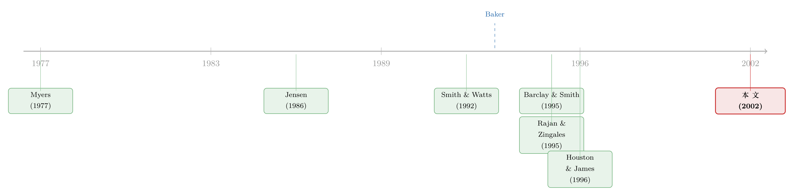

把『成长机会』拧成一个旋钮：冷战落幕，如何重写了军工厂的资产负债表
本文读的是 Goyal, Lehn & Racic (2002, Journal of Financial Economics)：作者把美国国防工业当成一场天然实验——里根扩军让军火商的成长机会暴涨，冷战落幕又让它骤降。借着这场「外生」的涨落，他们发现：当一家公司的成长机会下滑，它会显著加杠杆、把债务期限拉长、从银行债转向公开债、并减少有担保的优先债。一句话，成长机会这个变量，几乎单枪匹马地写出了一家公司债务政策的全部主要特征。
1 一个公司金融里「人人都信、却没人证得了」的命题
先说一个几乎写进每一本公司金融教科书的「常识」：成长机会越好的公司，越应该少借债。不仅借得少，而且它借的那点债，还应该更偏短期、更偏私募（而非公开）、更偏优先（比如有担保）。
这个命题的直觉并不难。一家满手都是「成长期权」的公司，价值大半压在「将来要做的项目」上，而不是「现在攥着的厂房设备」上；这时候债务会带来两层麻烦——一是 Myers (1977) 说的投资不足 (underinvestment)：股东掏全部成本、却要和债主分享收益，于是宁可放掉一些本该做的好项目；二是债主想盯也盯不住，因为高成长公司的资产大多是无形的，股东想偷偷加点风险太容易了。两层叠加，高成长公司用债融资的代价更高，于是它该少借。
听上去天衣无缝。可问题是——怎么证明它？
这正是这篇论文真正的张力所在。在它之前，文献里已经堆了一摞横截面证据：Smith & Watts (1992)、Gaver & Gaver (1993) 发现债务比率和成长机会的代理变量负相关；Barclay & Smith (1995a) 发现成长机会越高、债务期限越短；Houston & James (1996) 发现市值账面比 (market-to-book) 越高、越爱用私募债。看起来都对上了。
但所有这些证据都栽在同一个坑里：内生性。成长机会和债务政策很可能是同时被决定的。论文里引了 Baker (1993) 一句很重的话——这个问题「困扰着这一新兴领域里的每一篇论文……这里存在一种根本性的同时性，极难厘清」(p. 164)。
换句话说：我们看到「高成长 + 低杠杆」如影随形，但谁知道是成长机会导致了低杠杆，还是反过来——一家本就借不动钱的公司，被迫去做那些「轻资产、高成长」的生意？横截面数据天生分不开这两者。
2 关键的一步：去哪儿找一个「会自己变化、又跟债务无关」的成长机会
要打破这个死结，理想的实验长这样：找一群公司，让它们的成长机会外生地、大幅地上下波动，而这个波动和它们各自的债务政策八竿子打不着；然后看它们的资产负债表怎么跟着动。
作者的神来之笔，是把目光投向了美国国防工业。
为什么是它？因为军工厂的命运不由自己决定，而由华盛顿的国防预算决定，而国防预算又被地缘政治牵着走——这恰恰是一个对单个公司而言彻头彻尾外生的力量。这条时间线干净得近乎奢侈：
- 1980 年里根上台，承诺重整军备。实际国防采购支出（按 1995 年不变价）从 1980 年的
$53.6 billion一路爬到 1987 年的$108.3 billion； - 1989 年柏林墙倒塌、苏联解体，国防采购又一路滑到 1996 年的
$46.7 billion——比里根扩军之前的 1980 年还低。
一涨一落，国防预算十几年里实际萎缩了超过 50%。对一家军火商来说，这意味着它的成长机会先被吹起、又被戳破，而它本人对这一切无能为力。于是作者得到一句底气十足的话：可以把这场成长机会的衰退，当作对公司债务政策外生的冲击。这就是整篇论文的地基。
接着，一个自然的问题是：国防工业内部，是不是所有公司都一样敏感？
并不是。作者把 61 家国防承包商进一步切成两半：28 家武器制造商 (weapons firms) 和 33 家非武器国防公司 (nonweapons firms)。前者的身家性命才真正系在军火合同上——武器公司合同额对销售额的中位数比，在三个时段分别是 0.31 / 0.30 / 0.25，而非武器公司只有 0.09 / 0.12 / 0.10，差距在每个子时段都在 1% 水平上显著。这一刀切下去，论文就有了一个近乎完美的「处理组—对照组」结构：武器公司是处理组，非武器国防公司是天然的对照组——它们同处一个行业、面对同一套宏观与监管环境，唯独受预算涨落的冲击小得多。
3 先把「成长机会真的变了」这件事钉死
这里有一个容易被忽略、却极其关键的中间步骤。国防预算下滑，砍掉的到底是什么？
它可能砍掉的是在手资产 (assets in place) 的价值——军火商现有产品卖得少了；也可能砍掉的是成长期权 (growth options) 的价值——未来新产品的预期利润没了。论文要论证的是债务政策对成长机会的反应，所以它必须先证明：预算下滑削掉的，确确实实是成长期权那一块，而不只是现有资产。
为此，作者搬出五个被广泛使用的成长机会代理变量：资产市值账面比 (MBA)、股权市值账面比 (MBE)、盈利价格比 (EPR)、资本支出/资产 (CAPEX)、研发支出/资产 (R&D)。然后在一个 122 家公司（61 家国防 + 61 家基准制造业）、1980–1995 年的面板上，跑固定效应回归。被解释变量是成长代理变量的自然对数，核心自变量是「武器/非武器公司」分别与「1986–88」「1989–95」两个时段虚拟变量的交互项：
$$ \ln(\text{Proxy}_{it}) = \alpha_i + \beta \ln(\text{Assets}_{it}) + \sum_{p} \gamma_p D^{p}_{t} + \sum_{p}\delta_p\, (\text{Weapons}_i \times D^{p}_{t}) + \cdots + \varepsilon_{it} $$
这里真正要盯住的，就是 \(\delta_p\)——它度量武器公司在两个低增长时段里、相对基准公司的成长机会变化。
结果（论文表 1）相当漂亮：武器公司 × 1989–95 这个交互项，在全部五个方程里都带着「预期的符号」且高度显著——MBA 系数 -0.226（t = -5.9）、MBE -0.194（t = -3.2）、CAPEX -0.272（t = -4.9）、R&D -0.132（t = -2.5），EPR 则是 +0.199（t = 2.1，盈利价格比与成长机会反向，故正号亦为预期）。而对照组——非武器国防公司——在这些方程里大多不显著。
这里有个微妙却诚实的细节，作者没有藏：以股价为基础的几个代理（MBA、MBE、EPR）在 1990 年代绝对值其实在回升。但关键是，它们相对基准公司是下降的。论文因此小心地把话说成「相对衰退」：因为后面所有债务检验，比的都是武器公司相对基准样本的变化，所以只要相对意义上成长机会下来了，逻辑链就成立。
更妙的是一记「补刀」式的事件研究 (event study)。作者抓了两个把成长机会变化「结晶」成一瞬间的日子：1980 年 11 月 5 日里根与共和党参议院当选、1989 年 11 月 20 日国防部长切尼宣布大幅削减军费。围绕里根当选的窗口，武器公司的平均累计异常收益 (CAR) 为 +4.84%（1% 显著），81.5% 的武器公司收正；切尼宣布削减时，武器公司 CAR 翻成 -4.5%（高度显著），只剩 18.5% 收正。而非武器公司两次的 CAR 分别是 +0.34% 和 -0.27%，都不显著。两次事件 CAR 在武器公司间的相关系数是 -0.56（1% 显著）——里根扩军里赚得最多的，正是冷战落幕里摔得最惨的。
到这一步，「成长机会确实外生地、且只在武器公司身上大幅涨落了」这块地基，算是夯实了。
4 于是反转出现：成长机会一降，债务政策的「五官」一起变了
地基既稳，剩下的就是把债务政策的各个维度，一个个推到这场冲击面前对质。论文的核心发现，可以浓缩成一句话：成长机会下滑时，债务政策的每一个特征都朝着理论预言的方向动了。
第一，债务水平上升。 作者跑了两套固定效应回归，被解释变量分别是债务的账面值/资产市值、债务账面值/资产账面值，自变量除了前述时段—武器交互项，还加上一组 Rajan & Zingales (1995) 式的控制变量（规模、成长、盈利能力、资产有形性）。结果是：相对 1980–85 的高增长期，国防公司在 1986–88 和 1989–95 两个低增长期里显著加了杠杆。在不含 RZ 控制变量时，「武器公司 × 1989–95」的系数是 0.106（1% 显著）；加上 RZ 控制后降到 0.034（5% 显著）。系数会掉一大截，是因为 RZ 变量里本身就含了成长机会的代理，吃掉了一部分效应——但符号与显著性稳稳还在。这一条直接呼应了 Jensen (1986) 的自由现金流 (free cash flow) 理论：一个从高增长滑向低增长的行业，正是自由现金流的代理问题最凶的时候，债务此时挺身而出，逼着管理层把现金吐给股东。（关于这条主线，可参见《现金为什么一定要「还」出去？——四十年后，重读 Jensen 的自由现金流》与《债务这副药，为什么不能全吃？——重读 Jensen 和 Meckling 五十年》。）
第二，债务期限拉长。 成长机会收缩之后发行的债，其期限显著长于高增长期发行的债——这与 Barclay & Smith (1995a) 完全一致：高成长公司爱用短债来缓解投资不足，一旦成长机会褪去，这层顾虑松开，期限自然放长。（成长机会与债务期限这条线，另见《短债能不能「治好」成长型公司不敢借钱的病？》。）
第三，从银行债转向公开债。 武器公司在低增长环境里显著减少银行债、增加公开债，把私募/公开债之比压了下来。这与 Houston & James (1996) 吻合，也印证了一个朴素的论断：银行监督的价值，与公司的成长机会反向——高成长时你需要一双懂行的眼睛盯着，成长机会一旦消退，这双昂贵的眼睛就不值那个钱了。（银行债与公开债的取舍，可参见《信用最差的公司，到底去哪儿借钱？》。）
第四，减少优先（有担保）债。 武器公司在低增长期降低了担保债的使用，与 Barclay & Smith (1995b) 关于优先权结构的结果一致。
四条结论，四个维度——水平、期限、公募/私募、优先权——指向同一个旋钮：成长机会。这正是论文最有分量的地方：它不是验证了某一条孤立的相关性，而是让整套债务政策同时随一个外生变量起舞。
5 文献脉络：从「理论预言」到「横截面相关」，再到「天然实验」
这条研究线的演进，几乎是公司金融实证方法论的一个缩影。
最上游是两篇理论奠基之作。Myers (1977) 把「投资不足」写进了公司借债的成本，给出了「高成长—低杠杆」的第一个微观机制；Jensen (1986) 则从另一个方向——自由现金流的代理成本——预言了同一个负相关。两篇文章一道把「成长机会」抬到了资本结构理论的中心。
接着是一整代横截面实证。Smith & Watts (1992)、Gaver & Gaver (1993) 把成长机会代理变量和杠杆对上号；Barclay & Smith (1995a, 1995b) 分别打通了到债务期限、债务优先权结构的两条经验关系；Houston & James (1996) 补上了私募/公募这一维；Stohs & Mauer (1996) 则给期限关系泼了点冷水，只找到「喜忧参半」的支持。这些工作把理论的预言一条条变成了数据里的相关性。
然后，一个尖锐的反问浮出水面——Baker (1993) 点破：这些相关性统统逃不开同时性。于是 Rajan & Zingales (1995) 那套「我们到底知道资本结构的什么」的跨国证据，成了大家共用的基准设定，却也仍然停在横截面里。

本文 (2002) 的位置，就在这条线的「方法论转折点」上：它不发明新理论，也不堆新的横截面相关，而是借一场国防预算的涨落，把『成长机会』从内生的泥潭里拽出来，第一次让我们能比较干净地谈一句「成长机会的变化，引起了债务政策的变化」。它验证的不是某个新机制，而是整个理论范式的因果可信度。
6 评论与延伸（Q&A + 研究方向）
(a) 几个可能的疑问
Q：把国防预算说成「外生」，真的站得住吗？军费会不会本就受这些公司的财务状况影响？
在「单个公司」这个层面上，外生性相当可信：里根扩军和冷战落幕，是地缘政治与总统选举的产物，没有哪家军火商的资产负债表能左右柏林墙塌不塌。事件研究里非武器公司 CAR 几乎为零、武器公司却剧烈反应，也佐证了冲击来自外部而非公司自身。要担心的不是「军费被公司财务反向决定」，而是下一条——冲击是否只通过成长机会这一条渠道起作用。
Q：预算下滑既砍成长期权、也砍在手资产，论文凭什么说是成长机会在起作用？
这正是第 3 节那套「五个代理变量」检验存在的理由：作者要先证明被削掉的确有成长期权那一块（尤其是 CAPEX、R&D 这两个不依赖股价的代理也在持续下滑），才敢把后面的债务变化归因于成长机会。这是论文做得最审慎的一环。但平心而论，「在手资产价值下降」与「成长机会下降」在数据里很难完全剥离，残余的混淆始终存在。
Q：为什么加了 Rajan-Zingales 控制变量后，加杠杆的系数从 0.106 掉到 0.034？这算不算结果很脆弱？
不算脆弱，反而是意料之中。RZ 控制变量里就包含市值账面比这个成长机会的代理，等于把「成长机会」这条渠道的一部分显式控制掉了，剩下的交互项系数自然变小。关键是符号没变、显著性还在（5% 水平），说明即便剔掉可观测的成长代理，时段冲击仍带来了额外的加杠杆。
Q：这跟权衡理论 (trade-off) 还是优序融资理论 (pecking order) 更搭？
论文主打的是代理成本视角（Myers 的投资不足 + Jensen 的自由现金流），而非传统权衡或优序。有意思的是，加杠杆发生在成长机会下滑之时，且债务在「高增长→低增长」的转型期扮演了吸纳自由现金流的角色，这与 Jensen 的叙事高度一致——债不是用来省税，而是用来「管住」管理层。
Q：样本只有 61 + 61 家、单一行业，外部有效性够吗？
这是天然实验的经典权衡：用外部有效性换内部有效性。单一行业、样本不大，限制了结论往别的行业推广的力度；但也正因为锁定一个被外生力量摇动的行业，识别才干净。作者的定位很清楚——它要「补充」横截面文献、给那条因果关系背书，而非取代它们。
Q：用「相对基准」来表述成长机会下降，会不会是在为「股价其实在涨」打补丁？
确实带一点这个味道。1990 年代股市整体走牛，武器公司基于股价的代理绝对值在回升，作者只能退一步谈「相对基准的下降」。这在逻辑上自洽（因为债务检验也是相对基准做的），但读者需要明白：这里的「成长机会下降」是一个相对概念，不是绝对意义上的萎缩。
(b) 几个可能的研究问题与提案
1. 把这套天然实验搬到「外生冲击 → 公司债流动性」上。 【经济故事】成长机会骤降时，公司不只是「借更多」，还从银行债转向了公开债——这意味着大量新发的公司债涌入二级市场。这些「被迫公募化」的债券，其二级市场流动性是更好还是更差？是被新增供给压出了流动性溢价，还是因为发行人评级稳定而更易交易？ 【可行性】中。需要把 TRACE 成交数据与一个有清晰外生行业冲击的样本（如国防、或更近的能源转型、出口管制行业）对接，用事件窗口度量买卖价差、Amihud 等流动性指标。识别靠行业层面的外生预算/政策冲击，doable，但要处理发行选择的内生性。
2. 外资持有人会不会「读懂」成长机会的外生变化？ 【经济故事】军火商的成长机会被地缘政治牵动，而外国机构投资者对国防股往往有持仓限制或政治敏感。当冷战式的冲击重现（如近年的国防开支回潮），外资持有比例如何随成长机会的外生涨落而调整？这能把「外资是不是更聪明/更短视」的争论放进一个干净的实验里。 【可行性】中。需 13F + FactSet/Refinitiv 的国别持仓数据，叠加国防预算冲击。识别可借鉴本文的「武器 vs 非武器」处理—对照设计。挑战在于外资对国防股的样本可能偏薄。
3. 债务期限对成长机会冲击的反应，是否存在「棘轮效应」？ 【经济故事】本文发现成长机会下滑后债务期限拉长。但若成长机会再度回升（如新一轮扩军），期限会对称地缩回去吗，还是因为长债的再融资摩擦而「卡」在长端？这能检验调整成本对资本结构动态的约束。 【可行性】高。把样本延伸到 1995 年后的两轮国防开支周期（反恐战争、近年回潮），用债券发行层面的久期数据，做一个对称性检验。数据可得，识别清晰，是相对 doable 的延伸。
4. 把「成长机会—担保债」这条线接到抵押品再使用 (collateral reuse)。 【经济故事】本文发现成长机会下滑时，公司减少有担保的优先债。但低成长、重资产的公司本该更容易提供抵押品——为什么反而少用担保债？是债主不再需要担保来缓解信息不对称，还是抵押品的「期权价值」变了？ 【可行性】中。需 DealScan 的担保条款数据，结合资产有形性度量。识别可沿用行业冲击思路，但「为何少用担保」涉及供需双方，需结构化建模才能讲透。
7 参考文献（含我的判断）
我的总评：这是一篇方法论价值高于具体发现的论文。它的发现——成长机会下降则加杠杆、拉长期限、转向公募、减少担保——单看每一条都不新，文献里早有横截面对应物。它真正的贡献，是用一场近乎教科书式的天然实验，把这堆「相关」集体抬升为更可信的「因果」，从而给「成长机会在资本结构理论中的核心地位」盖了一个实证印章。
对识别的担忧，我会放在两处：一是「成长期权下降」与「在手资产价值下降」始终难以彻底剥离，论文的五代理检验缓解了它、却没消灭它；二是「相对基准的成长机会下降」这个表述，在 1990 年代股市走牛的背景下多少带点事后裁剪的意味，读者要清楚它是相对概念。后续我最想看到的，是把这套外生冲击接到二级市场的流动性与持有人结构上——债务政策变了之后，这些债到了谁手里、好不好卖，才是信用市场真正关心的下半场。
参考文献
- Baker, G.P. (1993). Growth, corporate policies, and the investment opportunity set. Journal of Accounting and Economics 16, 161–165.
- Barclay, M.J., Smith, C.W. (1995a). The maturity structure of corporate debt. Journal of Finance 50, 609–631.
- Barclay, M.J., Smith, C.W. (1995b). The priority structure of corporate debt. Journal of Finance 50, 899–918.
- Gaver, J.J., Gaver, K.M. (1993). Additional evidence on the association between the investment opportunity set and corporate financing, dividend, and compensation policies. Journal of Accounting and Economics 16, 125–160.
- Goyal, V.K., Lehn, K., Racic, S. (2002). Growth opportunities and corporate debt policy: the case of the U.S. defense industry. Journal of Financial Economics 64(1), 35–59.
- Houston, J., James, C. (1996). Bank information monopolies and the mix of private and public debt claims. Journal of Finance 51, 1863–1890.
- Jensen, M.C. (1986). The agency costs of free cash flow, corporate finance, and takeovers. American Economic Review 76, 323–329.
- Myers, S. (1977). Determinants of corporate borrowing. Journal of Financial Economics 5, 147–175.
- Rajan, R.G., Zingales, L. (1995). What do we know about capital structure?: some evidence from international data. Journal of Finance 50, 1421–1460.
- Smith, C.W., Watts, R.L. (1992). The investment opportunity set and corporate financing, dividend and compensation policies. Journal of Financial Economics 32, 263–292.
- Stohs, M.H., Mauer, D.C. (1996). The determinants of corporate debt maturity structure. Journal of Business 69, 279–312.